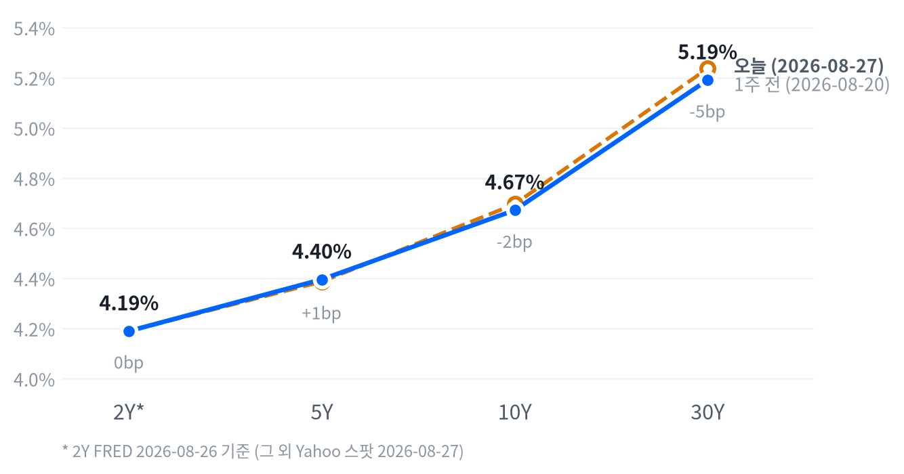

나스닥은 엔비디아 실적 서프라이즈에 힘입어 1.57% 올랐고 S&P500도 0.72% 상승했습니다. 하지만 11개 섹터 가운데 기술 단 하나만 올라, 지수 상승이 시장 전체로 퍼지지는 않았습니다.
엔비디아는 2분기 매출 962억 달러(전년비 +106%)를 기록했고, 내년도 매출 가이던스(기업이 제시하는 실적 전망치)도 시장 예상치를 크게 웃돌아 주가가 +8.74% 급등했습니다. 다음날(8월28일) 예정된 신임 연준의장 케빈 워시의 잭슨홀 첫 연설이 다음 변수로 남아 있습니다.
오늘의 행동. 축소합니다 — 2~6주 시계에서 메모리 상대비중을 OW에서 중립으로 한 단계 낮추고, 나머지 포지션은 그대로 유지합니다. 20일 초과수익이 +8.15%포인트에서 -6.25%포인트로 사흘 만에 반전해 축소 트리거(사전에 정해둔 축소 조건)가 켜졌습니다.
왜 지금인가. AI 데이터센터발 구조적 수요 자체는 훼손되지 않았지만, 2~6주 스윙에서는 이 정도의 단기 반전을 무시할 수 없습니다. 오늘 엔비디아 실적이 시장 전체를 이끄는 동안 정작 웨스턴디지털(-1.47%)·마벨(-1.49%)은 약세를 보인 것도 같은 맥락입니다.
무효화 조건. 20일 초과수익이 다시 +5.0%포인트를 넘으면 OW로 복귀합니다. 채권·주식·FX·원자재는 사전에 걸어둔 조건이 아직 충족되지 않아 그대로 유지합니다.
| 지수 | 종가 | 등락 | 등락률 |
|---|---|---|---|
| Nasdaq | 26,541.35 | +411.15 | +1.57% |
| S&P 500 Growth | 140.82 | +2.21 | +1.59% |
| S&P 500 | 7,730.99 | +55.29 | +0.72% |
| Russell 2000 | 3,014.34 | +8.44 | +0.28% |
| Dow | 53,569.44 | +105.56 | +0.20% |
| S&P 500 Value | 237.05 | -0.81 | -0.34% |
| 섹터 | 등락률 |
|---|---|
| Technology | +3.16% |
| Energy | -0.22% |
| Financials | -0.65% |
| Utilities | -0.76% |
| Materials | -0.82% |
| Industrials | -0.85% |
| Real Estate | -0.95% |
| Communication Services | -1.07% |
| Consumer Discretionary | -1.09% |
| Health Care | -1.13% |
| Consumer Staples | -1.38% |
장중 흐름. 나스닥은 개장가(26,365) 대비 초반부터 강했습니다. 09:30 ET 저점(26,274, 시가 대비 -0.35%)을 찍은 뒤 오후 내내 낙폭을 되돌리며 13:00 ET 고점(26,553, 시가 대비 +0.71%)까지 꾸준히 올랐습니다.
대형주 지수도 같은 궤적을 그렸습니다. 09:30 ET 저점(시가 대비 -0.27%)에서 13:00 ET 고점(시가 대비 +0.40%)까지 되돌림 없이 상승폭을 키웠습니다. 러셀2000은 10:00 ET 저점(시가 대비 -0.14%)을 찍은 뒤 역시 13:00 ET 고점(시가 대비 +0.47%)까지 함께 올라, 세 지수가 이례적으로 같은 시간대에 저점과 고점을 공유했습니다.
이 오후 상승은 엔비디아 실적 서프라이즈가 장 초반부터 사그라들지 않고 이어진 결과로 보입니다. 세일즈포스·크라우드스트라이크 등 소프트웨어 기업의 실적 서프라이즈도 함께 보도돼 기술주 전반의 매수세를 뒷받침했다는 시각이 있습니다.
전략 해석. 지수만 보면 강한 하루지만 속을 들여다보면 극도로 좁은 랠리였습니다. 11개 섹터 중 기술 단 하나만 오르고 나머지 열 개는 모두 내렸습니다.
방어주(헬스케어·필수소비재·유틸리티)와 경기민감주(임의소비재·금융)가 고르게 빠졌습니다. 기술주 쏠림 자체가 오늘 상승의 전부였다고 봐도 무리가 없습니다.
다음날(8/28) 잭슨홀 연설과 호르무즈 해협을 둘러싼 지정학 불확실성이 위험 선호를 제한한 배경으로 꼽힙니다. 지수 상승률만 보고 시장 폭까지 넓어졌다고 판단하면 오판일 수 있어, 종목·업종 선별이 그 어느 때보다 중요한 구간으로 봅니다.
오늘 지수를 누가 밀어올렸는지 나눠 보면 그림이 더 분명해집니다. 지수가 0.72% 오르는 동안 기술 섹터 혼자 1.06%포인트를 보탰고, 나머지는 모두 마이너스였습니다.
커뮤니케이션(-0.15%포인트)·임의소비재(-0.14%포인트)·헬스케어(-0.10%포인트)가 뒤에서 지수를 끌어내렸습니다. 남는 0.26%포인트는 이 섹터들만으로 설명되지 않는 몫입니다.
섹터 비중은 공표 자료가 아니라 최근 252거래일 수익률로 추정한 값이라 기여도는 어림값입니다(섹터가 지수를 설명하는 정도 0.98). 소재·부동산은 추정이 되지 않아 빼고, 그 몫은 설명되지 않는 부분에 남겨 뒀습니다.
시장이 한 덩어리로 움직이는 정도도 봐 둘 만합니다. 주요 자산 열 개의 최근 석 달 움직임을 묶으면 가장 큰 공통 힘 하나가 전체의 43.6%를 설명하는데, 그 힘이 가장 크게 실린 곳은 주식이고 그다음이 금리입니다. 직전 석 달에는 한 자산군이 뚜렷이 앞서지 않아, 오늘 순서와 곧바로 견주지는 않습니다.
| 만기 | 종가 | 전일比(bp) | 1주 전 | 주간 변화(bp) |
|---|---|---|---|---|
| 2Y* | 4.19% | +2.0bp | 4.19% | 0.0bp |
| 5Y | 4.396% | +1.5bp | 4.387% | +0.9bp |
| 10Y | 4.672% | +0.8bp | 4.696% | -2.4bp |
| 30Y | 5.191% | +0.5bp | 5.237% | -4.6bp |

2s10s 스프레드는 48.2bp입니다(2Y는 FRED 2026-08-26, 10Y는 Yahoo 2026-08-27 기준을 섞은 값). 두 다리의 기준일을 맞춘 동일자 FRED 기준으로는 47.0bp로, 두 값의 차이(1.2bp)는 5bp 문턱에 못 미쳐 날짜 불일치가 만든 왜곡은 크지 않습니다.
같은 날짜로 비교할 수 있는 5년물과 30년물의 차이(5s30s)는 79.5bp입니다. 오늘 하루로 보면 5년물(+1.5bp)이 10년물(+0.8bp)·30년물(+0.5bp)보다 더 올라, 만기가 길수록 상승폭이 작아지는 벨리 약세 주도 장세였습니다. 2년물의 하루 변화(+2.0bp)는 기준일 자체가 다른 구간이라 이 장중 흐름 판정에 그대로 엮을 수 없습니다.
주간(1주 전 대비) 기준으로 보면 2년물은 변화가 없었고, 5년물(+0.9bp)만 오르고 10년물(-2.4bp)·30년물(-4.6bp)은 내렸습니다. 만기가 길어질수록 낙폭이 커지는 불플래트닝으로, 2s10s로 보는 장단기 금리차도 한 주 전보다 소폭 좁혀졌습니다.
금리를 움직인 힘. 명목금리는 실질금리에 기대인플레(시장이 보는 향후 물가상승률 전망)를 더한 값으로 쪼갤 수 있습니다. FRED 동일자(2026-08-26) 기준으로 10년물의 하루 변화(+2bp)는 실질금리(+2bp)가 전부 설명했고 기대인플레는 보합이었습니다. 5년물의 하루 변화(+2bp)도 실질금리(+2bp)가 그대로 설명합니다.
표에 있는 Yahoo 스팟 기준 10년물의 하루 변화(+0.8bp, 2026-08-27)는 이 FRED 기준 수치와 비교 대상일이 다르다는 점을 짚어둡니다. 원인은 뚜렷하게 확인되지 않았습니다. 한 매체는 이날 국채 수익률이 신규 실업수당 청구 발표와 다음날 잭슨홀 심포지엄을 앞두고 완만히 낮아졌다고 전했습니다.
하지만 마감 기준 데이터로는 5년·10년·30년물 모두 소폭 상승했습니다. 장중 한때 하락했다가 마감 무렵 되밀렸을 가능성이 있으나 장중 시간대별 금리 데이터가 없어 이 부분은 확인하지 못했습니다.
다만 기간프리미엄(만기가 길수록 더 얹어 받는 보상)이 2bp 오른 점(2026-08-21 기준, 주간으로는 2.9bp 상승)을 보면, 수급 불안이나 향후 정책금리 경로 재산정 쪽에 무게가 실립니다.
신용시장은 차분합니다. 하이일드 스프레드는 2.67%로 한 주 새 6bp 좁혀졌고, 투자등급 스프레드도 0.80%로 안정적입니다(둘 다 2026-08-26 기준). 5년 후 5년 기대인플레는 2.35%로 하루 2bp 올랐지만 여전히 안정된 범위 안입니다(2026-08-27 기준).
커브가 지금 가리키는 5년 뒤 5년 금리는 4.95%입니다. 물가를 뺀 실질 기준으로는 2.62%고, 같은 기준일에서 하루 새 2bp 올랐습니다.
10년물 하나만 보면 당장의 잡음이 섞입니다. 이 값은 앞쪽 구간을 걷어내고 뒤쪽만 남긴 것이라, 성장·물가 눈높이가 움직이는지를 더 또렷하게 보여 줍니다.
5년·10년 국채금리에서 앞 5년을 걷어내 구했고 2026-08-26 기준입니다.
듀레이션 전략. 채권 포지션은 숏 바이어스·5년물 중심 보유를 그대로 유지합니다. 30년물이 5.05% 밑으로 내려가야 확대를 검토하는데 오늘 종가(5.191%)는 아직 그 문턱 위에 있습니다.
| 통화 | 종가 | 등락 | 등락률 |
|---|---|---|---|
| DXY | 99.13 | -0.04 | -0.04% |
| USD/KRW | 1,381.33 | -2.16 | -0.16% |
| USD/JPY | 159.36 | +0.10 | +0.06% |
| EUR/USD | 1.1658 | +0.0003 | +0.02% |
장중 흐름. USD/JPY는 새벽 01:30 ET 저점(159.108엔, 시가 대비 -0.09%)까지 살짝 밀렸다가 오전 11:30 ET 고점(159.526엔, 시가 대비 +0.17%)까지 올랐습니다. 종가(159.357엔)는 고점보다는 낮지만 시가보다는 높은 자리에서 마감했습니다.
DXY는 -0.04% 내린 99.13으로 거의 보합에 가깝게 마감했습니다. 국채금리가 실질금리 주도로 소폭 올랐는데도 달러는 힘을 못 쓴 하루였습니다.
전략 해석. 오늘 하루는 달러가 거의 보합이었지만, 20일 흐름(-0.88%)은 여전히 완만한 약세 쪽입니다. §9 포지션은 달러 소폭 숏을 그대로 유지하며, DXY가 101을 웃돌면 이 판단을 축소 검토합니다.
| 품목 | 종가 | 등락 | 등락률 |
|---|---|---|---|
| Natural Gas | $2.903 | +0.061 | +2.15% |
| WTI | $83.61 | +1.38 | +1.68% |
| Gold | $4,663.40 | +65.20 | +1.42% |
| Brent | $88.62 | +0.78 | +0.89% |
장중 흐름. WTI는 새벽 03:00 ET 저점(80.65달러, 시가 대비 -1.45%)까지 밀렸다가 오후 14:00 ET 고점(84.27달러, 시가 대비 +2.97%)까지 뛰었습니다. 종가(83.61달러)는 고점에서 소폭 내려온 자리입니다.
금은 자정 무렵(00:00 ET) 고점(4,682달러)을 찍은 뒤 개장 직후 09:30 ET 저점(4,616달러, 시가 대비 -1.36%)까지 밀렸습니다. 이후 낙폭을 되돌려 전일 종가 대비로는 +1.42% 오른 4,663달러에서 마감했습니다.
전략 해석. 원유는 이란-오만 통항 협상과 산발적 공격이 뒤섞인 지정학 재료가 하루 종일 가격을 흔들었습니다. §9 포지션은 지정학 프리미엄이 사실상 빠졌다고 보고 원자재·에너지는 중립을 유지합니다. 금은 실질금리 하락 기대와 달러 약세라는 두 힘을 동시에 타는 자산이라, 오늘도 강세를 이어갔고 §9 포지션은 비중확대를 유지합니다.
국면은 어제와 같은 냉각입니다. 성장세가 둔화로 꺾인 지 이틀째고, 인플레는 방향을 정하지 못한 채 교착에 머물러 있습니다. 오늘 새로 나온 신규 실업수당 청구는 고용축 안에서는 개선 쪽에 힘을 보탰지만, 국면 판정 자체를 다시 흔들 만큼 크지는 않았습니다.
이 국면은 지난 8월26일 교착에서 냉각으로 넘어온 지 이틀째라 앞으로 사흘은 규정상 더 움직일 수 없습니다. 다만 오늘 새로 계산한 점수로도 성장축은 -0.449, 인플레축은 -0.327로 여전히 같은 칸(냉각)을 가리키고 있어, 잠금이 풀리더라도 당장 국면이 바뀔 유인은 없습니다. 성장축 -0.449 · 인플레축 -0.327
고용은 보합에 가깝습니다. 일곱 개 지표 가운데 넷이 개선 쪽으로 움직였고, 둘은 악화·하나는 보합이었습니다.
신규 실업수당 청구 4주 평균은 205,500건으로 뚜렷한 개선 판정을 받았고, 구인건수(JOLTS)도 736만 건으로 완만히 개선됐습니다. 다만 시간당 임금은 전월비 0.05%로 늘어나는 데 그쳐 전월(0.29%) 대비 완만하게 후퇴했습니다. 고용축 +0.184
| 지표 | Actual | Forecast | Previous | 발표일 | 추세 | 판정 |
|---|---|---|---|---|---|---|
| 신규 실업수당 청구 | 203,000건 | 208,000건 | 207,000건 | 2026-08-22 주간 | 보합(미미) | 하회▼ |
| 신규 청구 4주 평균 | 205,500건 | – | 204,250건 | 2026-08-22 주간 | 개선(뚜렷) | – |
| 계속 실업수당 청구 | 1,778,000건 | – | 1,796,000건 | 2026-08-15 주간 | 개선(미미) | – |
| 구인건수(JOLTS) | 736.0만 건 | – | 753.7만 건 | 2026-06 | 개선(완만) | – |
| 비농업 고용(증감) | -2.3만 명 | – | +2.0만 명 | 2026-07 | 악화(완만) | – |
| 실업률 | 4.1% | – | 4.2% | 2026-07 | 개선(미미) | – |
| 시간당 임금(MoM) | 0.05% | – | 0.29% | 2026-07 | 악화(완만) | – |
무엇이 나왔나. 미 노동부는 8월22일로 끝난 주간의 계절조정 신규 실업수당 청구가 203,000건으로 집계됐다고 밝혔습니다. 전주 수정치(207,000건)보다 4,000건 줄었고 컨센서스(208,000건)도 하회했습니다.
신규 청구 4주 이동평균은 205500건으로 전주(204,250건)보다 오히려 늘었습니다. 8월15일 주간 계속 청구는 1,778,000건으로 전주(1,796,000건) 대비 18,000건 줄어 보험실업률은 1.2%를 유지했습니다.
무엇이 그것을 만들었나. 노동부 원문을 보면 전주치가 서로 다른 방향으로 두 번 수정됐습니다. 신규 청구 전주치는 206,000건에서 207,000건으로 위로, 계속 청구 전주치는 1,799,000건에서 1,796,000건으로 아래로 수정됐습니다. 감소 폭이 1,000건을 넘은 주는 모두 사유가 달렸는데, 늘어난 주는 한 곳도 없었습니다.
미시간(-2,466건)은 "제조업 부문 정리해고 감소"를, 펜실베이니아(-1,077건)는 "의료·운수·행정지원업 정리해고 감소"를 이유로 들었습니다. 비계절조정 원자료는 169,786건으로 전주보다 3,231건 줄었는데, 계절요인은 207건 감소만 예상했던 터라 실제 개선폭이 모델 예상보다 컸습니다.
그래서 어떻게 볼 것인가. 헤드라인 서프라이즈(20만3천 대 컨센서스 20만8천)만 보면 노동시장이 여전히 견조하다는 신호지만, 전주치 상향 수정과 4주 평균의 소폭 상승은 개선 폭이 헤드라인만큼 크지 않다는 뜻입니다. 계속 청구가 178만대의 낮은 수준을 유지하는 점은 레이오프 자체가 늘지 않고 있음을 보여줍니다. 종합하면 이번 발표는 고용축 판정을 개선 쪽으로 살짝 밀었을 뿐 냉각 국면 판정을 흔들 만큼 강하지 않았고, 워시 연준의 매파 기조를 뒤집을 근거도 되지 못합니다.
생산·활동은 악화 쪽입니다. 다섯 개 지표 가운데 넷이 나빠졌습니다. 내구재 주문은 전월비 +1.07%로 숫자만 보면 개선처럼 보이지만, 항공기 발주분을 걷어낸 흐름 판정에서는 뚜렷한 악화로 나왔습니다(전월 +0.54%).
산업생산도 전월비 +0.20%로 전월(+0.27%)보다 증가폭이 줄어 완만하게 후퇴했습니다. 기존주택 판매는 406만 채로 숫자상 줄었지만(전월 413만 채) 흐름 판정으로는 완만한 개선이라, 다른 지표들과 반대 방향을 가리켰습니다. 활동축 -0.362
| 지표 | Actual | Forecast | Previous | 발표일 | 추세 | 판정 |
|---|---|---|---|---|---|---|
| 산업생산(MoM) | 0.20% | – | 0.27% | 2026-07 | 악화(완만) | – |
| 내구재 주문(MoM) | 1.07% | – | 0.54% | 2026-07 | 악화(뚜렷) | – |
| 신규주택 판매 | 60.7만 채 | – | 67.8만 채 | 2026-07 | 보합(미미) | – |
| 기존주택 판매 | 406.0만 채 | – | 413.0만 채 | 2026-07 | 개선(완만) | – |
| 실질GDP 성장률(QoQ, 연율) | 1.5% | – | 2.1% | 2026-Q2 | 보합(미미) | – |
| S&P Global 제조업 PMI(속보) | 53.2 | 53.9 | 53.9 | 2026-08-21 | – | 하회▼ |
| S&P Global 서비스업 PMI(속보) | 56.8 | 54.0 | – | 2026-08-21 | – | 상회▲ |
| S&P Global 종합 PMI(속보) | 56.0 | 54.0 | – | 2026-08-21 | – | 상회▲ |
소비는 뚜렷하게 악화됐습니다. 두 지표 모두 나빠졌고 반대 방향은 없었습니다.
미시간대 소비자심리지수는 49.5로 전월(44.8)보다 숫자상으로는 올랐지만 흐름 판정에서는 뚜렷한 악화로 집계됐고, 소매판매도 전월비 -0.58%로 전월(+0.25%) 증가에서 감소로 돌아섰습니다. 네 축 가운데 소비가 가장 크게 꺾인 축입니다. 소비축 -1.168
| 지표 | Actual | Forecast | Previous | 발표일 | 추세 | 판정 |
|---|---|---|---|---|---|---|
| 소매판매(MoM) | -0.58% | – | 0.25% | 2026-07 | 악화(뚜렷) | – |
| 미시간대 소비자심리 | 49.5 | – | 44.8 | 2026-06 | 악화(뚜렷) | – |
| 컨퍼런스보드 소비자신뢰지수 | 89.4 | – | 90.2 | 2026-08-25 | – | – |
물가축은 점수 -0.327로 둔화 경계 안쪽에 머물러 교착을 유지합니다. 여덟 지표 가운데 셋만 둔화 방향을 가리키고(그중 뚜렷한 둔화는 둘) 나머지 다섯은 재가속이거나 교착입니다. 소비자물가 전월비는 +0.07%로 전월(-0.42%) 대비 반등했지만 여전히 낮은 수준이라 흐름 판정에서는 뚜렷한 둔화로 잡혔습니다.
생산자물가도 전월비 -0.03%로 두 달 연속 마이너스를 이어가 같은 판정을 받았습니다. 반대로 미시간대 1년 기대인플레는 4.6%로 전월(4.8%)보다 숫자는 낮아졌음에도 흐름 판정으로는 뚜렷한 재가속으로 분류돼, CPI·PPI의 완만한 둔화와 기대인플레의 재가속이 물가축 안에서 정면으로 엇갈립니다. 물가축 -0.327
| 지표 | Actual | Forecast | Previous | 발표일 | 추세 | 판정 |
|---|---|---|---|---|---|---|
| 소비자물가(YoY) | 3.54% | – | 3.73% | 2026-07 | 재가속(완만) | – |
| 소비자물가(MoM) | 0.07% | – | -0.42% | 2026-07 | 둔화(뚜렷) | – |
| 근원 소비자물가(YoY) | 2.79% | – | 2.81% | 2026-07 | 교착(미미) | – |
| 근원 소비자물가(MoM) | 0.22% | – | -0.02% | 2026-07 | 둔화(완만) | – |
| 생산자물가(MoM) | -0.03% | – | -0.11% | 2026-07 | 둔화(뚜렷) | – |
| PCE 물가지수(YoY) | 3.70% | – | 3.72% | 2026-07 | 재가속(완만) | – |
| 근원 PCE(YoY) | 3.34% | – | 3.34% | 2026-07 | 재가속(미미) | – |
| 미시간대 1년 기대인플레 | 4.6% | – | 4.8% | 2026-06 | 재가속(뚜렷) | – |
연준은 9월16일 FOMC에서 동결을 지속할 공산이 큽니다. CME FedWatch 기준 동결 확률은 68.4%로 어제와 같은 수준을 유지합니다. 오늘 새로 나온 신규 실업수당 청구는 이 확률을 흔들 만한 재료는 아니었습니다.
이 판단을 되돌릴 조건은 명확합니다. 9월 중순 발표될 8월분 CPI가 전월비 0.3% 이상으로 재가속하면 동결-우선 경로는 무효화됩니다.
채권은 국면상 우호적입니다. 물가 상승률 둔화 흐름이 이어지면 실질금리가 정점을 지나 정책 완화 재개 기대가 장기물 총수익을 지지하는 경로입니다.
앞서 채권 섹션에서 본 대로 FRED 동일자(8/26) 분해에서 10년물의 하루 변화(+2bp)는 실질금리(+2bp)가 전부 설명했고 기대인플레는 보합이었습니다. 실질금리가 여전히 방향을 주도하고 있다는 뜻입니다. 확인 지표는 근원 PCE 전년비가 3.0% 아래로 더 내려가거나 30년물이 앞서 채권 섹션에서 짚은 되돌림 문턱을 밑도는지입니다.
구조적으로는 채권에 우호적이지만, §9의 2~6주 포지션은 여전히 숏 바이어스(듀레이션 축소 쪽)를 유지합니다. 30년물이 5.191%로 20년래 고점권을 완전히 벗어나지 못했고, 포지션 확대 조건도 아직 충족되지 않았기 때문입니다. 두 판단은 시계가 다를 뿐 모순은 아니며, 30년물이 5.05% 밑으로 떨어지는 순간 스탠스(2~6주 시계의 포지션 판단)도 같은 방향으로 움직일 조건이 열립니다.
귀금속도 같은 경로에서 우호적입니다. 실질금리 하락 기대와 달러 약세 흐름이 금 보유비용을 낮추고, 지정학·재정 헤지 수요도 겹쳐 있습니다. 오늘 금은 전일 대비 1.42% 오른 4,663달러로 마감했습니다. 이 흐름을 되돌릴 조건은 10년 실질금리가 재차 오르거나 금 5일 수익률이 -4% 밑으로 떨어지는 경우입니다(현재 +3.25%).
주식은 국면상 중립입니다. 성장 쪽 점수가 둔화로 넘어갔지만 물가 상승률 둔화 흐름도 함께 진행돼 두 힘이 상쇄되고, 장기금리 레벨이 여전히 높아 할인율이 주가 수준의 상단을 누르는 경로도 남아 있습니다.
오늘 나스닥은 엔비디아 실적 하나에 힘입어 올랐지만 섹터 대부분이 하락한 가운데 기술 하나만 상승해, 지수 상승이 최종수요 확장을 폭넓게 반영한 신호로 보기는 어렵습니다. 확인 지표는 ISM 제조업 PMI가 50을 다시 넘어 유지되는지, 또는 10년물이 4.5% 밑으로 내려가는지입니다.
에너지도 중립입니다. 지정학 리스크 프리미엄은 3~6개월 구조축이라기보다 이벤트성 변수이고, OPEC+ 증산 여력과 이란 관련 지정학 리스크가 서로 상쇄됩니다.
오늘 WTI는 전일 대비 1.68% 오른 배럴당 83.61달러로 마감했습니다. 확인 지표는 브렌트유 3개월 평균이 90달러를 웃도는 흐름이 이어지는지, 호르무즈 통항 차질이 실제로 발생하는지입니다.
FX는 국면상 비우호적입니다(달러 약세 경로). 성장이 둔화되는 가운데 물가 압력이 누그러지면 실질금리 격차가 줄어들 것이란 기대가 달러 약세를 지지하고, 안전자산 수요는 엔화·금으로 분산되는 편입니다. 오늘 DXY는 -0.04% 소폭 내린 99.13으로 마감해 이 경로와 결이 같았습니다. 확인 지표는 DXY 20일 수익률이 -3% 이하로 확대되거나 CME FedWatch의 인하 확률이 커지는지입니다.
AI 데이터센터 투자 사이클은 매크로 경기 흐름과 따로 움직입니다 — 소비축이 뚜렷하게 꺾이는 동안에도 메모리 수요는 독립적으로 늘고 있습니다. 엔비디아는 이번 분기 매출이 962억 달러(전년비 +106%)로 집계됐습니다.
내년도 매출 성장률 가이던스도 약 70%로 제시해 시장 예상치를 크게 웃돌았습니다. 회사가 동시에 언급한 "메모리 원가 상승"은 D램·HBM 공급이 여전히 타이트하다는 신호로 읽을 수 있습니다.
AI 인프라 쪽은 장기금리 레벨이 높은 구간에서는 할인율 상승이 고성장주 주가 수준을 압박하는 경로가 이 사이클의 우호적 효과를 상쇄해 중립에 머뭅니다. 오늘 마벨·루멘텀이 반대 방향으로 엇갈린 것도 캐펙스 사이클 확인 신호라기보다 개별 실적 재료 성격이 강합니다. 확인 지표는 마이크론 등 주요 업체의 회계연도 가이던스가 계속 상향되는지, 또는 30년물이 5.4%를 웃돌아 할인율 경로가 다시 강해지는지입니다.
한 매체는 국채 수익률이 이번 고용지표와 다음날 잭슨홀 심포지엄을 앞두고 완만하게 하락했다고 전했습니다. 실제로는 10년물이 +0.8bp, 30년물이 +0.5bp로 하루 변화가 미미해, 헤드라인 서프라이즈(20만3천 대 컨센서스 20만8천)에도 채권시장이 크게 반응하지 않았음을 보여줍니다.
주식시장은 엔비디아 실적이라는 다른 재료가 워낙 컸던 탓에 이 고용지표 하나로 방향이 갈리지는 않았습니다. 다만 예상보다 견조한 고용 지표가 워시 연준의 매파 기조를 흔들 근거는 되지 못한다는 해석과는 궤를 같이했습니다.
8월28일 잭슨홀 심포지엄에서 신임 연준의장 케빈 워시가 취임 후 첫 공식 연설에 나섭니다. 6월 취임 초반 매파적 색채로 2년물이 급등했던 만큼, 이번 연설이 9월 FOMC 경로에 대한 첫 공식 신호로 주목받고 있습니다.
9월16일 FOMC 정례회의에서는 CME FedWatch 기준 동결 확률이 68.4%로 가장 유력합니다. 이 확률을 흔들 다음 변수는 9월 중순 발표될 8월분 CPI로, 전월비 0.3% 이상 재가속하면 동결-우선 경로 자체가 무효화됩니다.
이 섹션은 스탠스(2~6주 시계의 포지션 방향)를 다룹니다. 어제 판단을 그대로 이어받고, 사전에 정해둔 트리거가 충족될 때만 등급을 바꿉니다.
어제 걸어둔 트리거 여덟 개 가운데 실제로 충족된 것은 메모리의 축소 트리거 하나뿐입니다. 메모리 바스켓의 20일 초과수익은 어제 +8.15%포인트였는데 오늘은 -6.25%포인트로 뒤집혀, 확대 사흘 만에 다시 0%포인트 아래로 떨어지는 축소 트리거가 켜졌습니다. 이에 따라 메모리는 OW에서 중립으로 한 단계 내립니다.
나머지 자산군은 전부 유지합니다. 주식은 S&P500의 50일선 상회폭이 2.29%로 확대 조건(4%)에, 1개월 플러스 섹터 수는 7개로 확산 조건(11개)에 각각 못 미쳐 소폭확대를 그대로 유지합니다. 채권도 30년물이 5.191%로 축소 조건(5.05% 하회)을 충족하지 못해 숏 바이어스를 이어갑니다.
FX·에너지·귀금속·AI 인프라도 모두 트리거가 충족되지 않아 전일 등급을 그대로 승계합니다. AI 인프라는 5일 초과수익이 +0.28%포인트로 확대 조건(+5.0%포인트)에 크게 못 미쳐 중립을 유지했습니다.
| 자산군 | 등급 | 유지 | 전일대비 | 논거 | 다음 분기점 |
|---|---|---|---|---|---|
| 주식 | 소폭확대 대형 성장주 선별, 소재·헬스케어·소형·가치주 확대 |
5영업일 | 유지 | 시장 폭 확산 신호(11개 섹터 중 7개가 1개월 플러스)가 아직 완전하지 않아 소폭확대 그 이상은 이릅니다. VIX가 14.51로 낮아 안전자산 수요도 낮은 만큼 축소할 이유도 없습니다. | S&P500이 50일선을 4.0% 이상 상회(현재 2.29%)하거나 11개 섹터 전부 1개월 플러스(현재 7개)로 확산되면 확대, 20일선을 -1.0% 이상 하회(현재 +0.38%)하거나 VIX가 20을 넘으면(현재 14.51) 축소합니다. |
| 채권 | 숏 바이어스 벨리 OW · 5년물 중심, 30년물 신규 확대 보류 |
10영업일 | 유지 | 30년물이 5.191%로 근 20년래 고점권을 완전히 벗어나지 못해 장기물 프리미엄 되돌림을 아직 확인하지 못했습니다. 3~6개월 구조에서는 채권에 우호적이지만 2~6주 전술 시계에서는 그 되돌림이 레벨로 확인되지 않았습니다. | 30년물이 5.40%를 상회(현재 5.191%)하면 숏을 확대하고, 5.05%를 하회(현재 5.191%)하거나 9월16일 FOMC에서 인하 경로가 앞당겨지는 신호가 나오면 중립으로 축소합니다. |
| FX | 달러 소폭 숏 엔화는 개별 요인이 커 DXY와 분리 점검 |
10영업일 | 유지 | DXY의 20일 수익률이 -0.88%로 완만한 약세를 유지하지만, 오늘은 -0.04%로 거의 보합이라 추세 가속을 아직 확인하지 못했습니다. | DXY 20일 수익률이 -3.0% 이하로 확대(현재 -0.88%)되면 숏을 늘리고, DXY가 101을 상회(현재 99.13)하면 중립으로 되돌립니다. |
| 원자재 | 중립 에너지 비중확대 귀금속 |
4영업일 | 유지 | 에너지는 WTI 5일 수익률이 -4.8%로 확대·축소 트리거 사이 중립대에 머물러 지정학 프리미엄 소멸 판단을 유지합니다. 귀금속은 금 5일 +3.25%·20일 +13.73%로 안전자산 수요와 달러 약세를 동시에 반영하는 이중 헤지 효과가 이어집니다. | WTI 5일 수익률이 +6.0% 이상(현재 -4.8%)이면 에너지 확대, -6.0% 이하면 축소합니다. 금은 5일 -4.0% 이하로 꺾이거나(현재 +3.25%) DXY가 101을 상회(현재 99.13)하면 축소로 전환합니다. |
| 메모리 | 중립 20일 초과수익 반전으로 OW에서 중립으로 축소 |
1영업일 | ▼1단계 | AI 데이터센터발 구조적 수요는 여전하지만, 20일 초과수익이 +8.15%포인트에서 -6.25%포인트로 사흘 만에 반전해 단기 모멘텀이 꺾였습니다. 2~6주 스윙에서는 이 반전을 무시할 수 없어 중립으로 낮춥니다. | 20일 초과수익이 다시 +5.0%포인트를 넘으면(현재 -6.25%포인트) OW로 복귀하고, 낸드·D램 현물가가 하락 전환하거나 주요 업체가 감산을 발표하면 UW 검토로 들어갑니다. |
| AI 인프라 | 중립 실적 흐름이 뚜렷한 종목만 선별, 파이낸싱 리스크는 개별 이슈로 분리 |
10영업일 | 유지 | 5일 초과수익이 +0.28%포인트로 마이너스는 벗어났지만 확대 조건(+5.0%포인트)에는 크게 못 미칩니다. 오늘 마벨(-1.49%)·루멘텀(+1.82%)이 엇갈린 것도 테마 전체보다 개별 실적 재료 성격이 강합니다. | 5일 초과수익이 +5.0%포인트를 넘거나(현재 +0.28%포인트) 하이퍼스케일러의 3분기 캐펙스 가이던스가 상향되면 OW 검토, 캐펙스 가이던스가 하향되거나 파이낸싱 우려로 발주가 지연되면 UW 검토로 들어갑니다. |
잭슨홀발 매파 서프라이즈가 첫 번째 변수입니다. 케빈 워시 의장의 8월28일 첫 공식 연설이 예상보다 매파적이면 30년물이 5.4%를 넘어서며 채권 숏 바이어스가 확대로, 달러도 동시에 강세로 돌아설 수 있습니다.
좁은 랠리의 되돌림도 경계 대상입니다. 오늘 상승이 기술 섹터 하나에 쏠려 있어, 후속 대형 실적이 기대에 못 미치면 시장 폭 확산 없이 지수만 되밀릴 수 있습니다. 안전자산 선호 심리가 커지는지는 VIX 흐름으로 확인합니다.
호르무즈 리스크가 재점화될 가능성도 남아 있습니다. 이란-오만 통항 협상이 결렬되면 유가가 다시 급등해 에너지 확대 트리거(WTI 5일 +6% 이상)를 켤 수 있습니다.
엔비디아가 하루를 지배했습니다. +8.74%로 마감해(227.98달러) 전날 장마감 후 발표한 실적이 시장을 그대로 움직였습니다. 2분기 매출은 962억 달러(전년비 +106%)였습니다.
회사가 제시한 내년도 매출 성장률 가이던스(약 70%)도 시장 예상치를 크게 웃돌았습니다. 장중에는 개장 직후 09:30 ET 저점(220.90달러, 시가 대비 -0.76%)을 찍은 뒤 13:00 ET 고점(230.47달러, 시가 대비 +3.54%)까지 오르는 궤적을 그렸습니다.
정작 메모리·AI 인프라 개별주는 엇갈렸습니다. 웨스턴디지털(-1.47%)과 마벨(-1.49%)은 엔비디아가 언급한 "메모리 원가 상승"과 무관하게 하루 종일 약세였고, 반대로 SK하이닉스(+2.49%)·삼성전자(+1.72%, 아시아 마감 기준)는 상승했습니다. 같은 테마 안에서도 종목별로 반응이 갈렸다는 뜻입니다.
버티브는 +2.07%로 실적 재료를 그대로 반영했습니다. 최근 분기 매출은 전년비 +24% 늘어난 32.7억 달러, 조정 EPS는 +60% 늘어난 1.52달러였습니다. 회사는 이 흐름을 반영해 연간 매출 가이던스를 138억~142억 달러로 상향했고, 데이터센터 전력·열관리 수요가 배경으로 꼽힙니다.
| 종목 | 종가 | 등락 | 등락률 |
|---|---|---|---|
| Nvidia | $227.98 | +18.32 | +8.74% |
| SK hynix | ₩1,729,625 | +41,991 | +2.49% |
| Samsung Elec | ₩266,000 | +4,500 | +1.72% |
| Seagate | $847.20 | +0.83 | +0.10% |
| Micron | $935.39 | -3.01 | -0.32% |
| Western Digital | $462.00 | -6.88 | -1.47% |
업계 뉴스. 엔비디아는 실적 콜에서 다음 분기 매출총이익률이 다소 낮아질 수 있다며 "메모리 원가 상승"을 이유로 들었습니다. 마이크론 CEO 산제이 메로트라는 D램·낸드 수요가 공급을 크게 웃돌고 있으며 이 타이트한 상황이 2027 역년 이후까지 지속될 것이라고 밝혔습니다. CBO 수미트 사다나는 고객사들이 전력·데이터센터 용량보다 D램을 1순위 제약 요인으로 꼽는 경우가 늘고 있다고 말했습니다.
다만 8월 한 달간 메모리주는 국채금리 상승에 따른 밸류에이션(주가 수준) 부담으로 1주 단위 -16%~+8% 급등락을 반복해온 종목군이라는 보도도 있습니다. 오늘도 미국 3사(마이크론·웨스턴디지털·시게이트)는 엇갈린 반면 SK하이닉스·삼성전자는 함께 올라, 지역별로도 방향이 갈렸습니다.
메모리가 시장에 뒤진 것이 메모리 얘기인지 스타일 탓인지는 나눠 봐야 압니다. 최근 석 달 움직임으로 미국 3사의 초과수익을 성장·가치, 대형·소형, 반도체 세 축에 갈라 봤습니다.
반도체 축은 오히려 메모리를 1.05%포인트 밀어올렸습니다. 그런데도 남는 -5.61%포인트가 세 축으로 설명되지 않습니다.
반도체 전반의 움직임으로는 이 부진이 설명되지 않는다는 뜻이죠. 원인이 무엇인지까지 이 수치가 짚어 주지는 않습니다.
반도체 축은 반도체 지수와 시장의 차이로 잡았는데, 그 지수 안에 마이크론이 들어 있어 반도체 몫과 남는 몫이 서로 얼마나 섞였는지는 이 수치만으로 가릴 수 없습니다. 미국 3사는 시장이 1% 움직일 때 3.43% 움직여 온 종목군이라 남는 몫에 그 민감도 차이도 섞여 있습니다. 세 축이 설명하는 정도는 0.74고 값은 최근 60거래일 기준입니다. 네 몫을 더하면 20거래일 합산 초과수익 -4.63%포인트인데, 아래 §9의 -6.25%포인트는 20거래일 전 종가와 곧바로 견준 값이라 기준이 다릅니다.
투자 관점. §9 스탠스는 오늘 메모리를 OW에서 중립으로 한 단계 낮췄습니다. AI 데이터센터발 구조적 수요는 여전하지만 20일 초과수익이 +8.15%포인트에서 -6.25%포인트로 사흘 만에 반전해 단기 상승 흐름이 꺾였기 때문입니다. 초과수익이 다시 확대 조건을 넘으면 OW로 복귀하고, 낸드·D램 가격이 하락 전환하거나 주요 업체가 감산을 발표하면 UW 검토로 들어갑니다.
| 종목 | 분야 | 종가 | 등락 | 등락률 |
|---|---|---|---|---|
| Vertiv | 냉각·전력 인프라 | $269.28 | +5.47 | +2.07% |
| Lumentum | 광통신 부품 | $956.14 | +17.11 | +1.82% |
| Coherent | 광통신 부품 | $295.39 | +1.02 | +0.35% |
| GE Vernova | 전력 인프라 | $953.83 | +0.74 | +0.08% |
| Marvell | 데이터센터 반도체·ASIC | $241.45 | -3.66 | -1.49% |
업계 동향. 버티브는 최근 분기 매출이 전년비 +24% 늘어난 32.7억 달러, 조정 EPS는 +60% 늘어난 1.52달러였습니다. 연간 매출 가이던스도 138억~142억 달러로 상향했는데, 데이터센터 전력·열관리 수요(AI 랙 밀도 상승)가 배경으로 꼽힙니다.
루멘텀은 마벨과 함께 차세대 AI 스케일업 인프라용 광회로스위칭(OCS) 기술을 시연한 바 있어, AI 데이터센터 광트랜시버·레이저 공급망의 핵심 종목으로 거론됩니다. 루멘텀·코히런트·버티브 세 종목은 지난 3월 S&P500 리밸런싱에서 신규 편입된 AI 관련주이기도 합니다.
마벨만 -1.49%로 홀로 물러섰습니다. 오늘자로 확인되는 뚜렷한 개별 촉매는 없었습니다.
AI 인프라도 같은 방식으로 갈라 보면 성격이 분명합니다. 최근 석 달 기준으로 반도체 축이 보탠 몫은 0.58%포인트뿐이고, 남는 15.12%포인트가 세 축 바깥에 있습니다. 앞선 폭의 대부분이 반도체 사이클로도 스타일로도 설명되지 않는다는 뜻이죠. 반도체 축의 계수는 창을 60거래일에서 252거래일로 늘려도 방향이 그대로라, 이 부분은 기간을 바꿔도 흔들리지 않습니다.
업계가 말하는 설비투자 사이클과 어긋나는 결과는 아닙니다. 다만 이 분해에 설비투자 축이 따로 들어 있는 것은 아니라서, 수치가 그 원인을 확인해 준다고까지 볼 수는 없습니다.
이 다섯 종목도 시장이 1% 움직일 때 3.48% 움직여 온 만큼, 남는 몫에 그 민감도 차이가 섞여 있습니다. 세 축이 설명하는 정도는 0.77이고 값은 최근 60거래일 기준입니다. 네 몫을 더하면 20거래일 합산 초과수익 +17.02%포인트가 됩니다.
투자 관점. §9 스탠스는 AI 인프라를 중립으로 유지합니다. 캐펙스(설비투자) 사이클 자체는 우호적이지만 장기금리 레벨이 높아 주가 수준 압박 경로가 함께 작동하는 데다, 5일 초과수익이 +0.28%포인트로 확대 조건(+5.0%포인트)에 크게 못 미치기 때문입니다. 가격 흐름의 힘이 뚜렷한 종목만 선별하는 접근을 유지합니다.